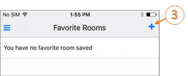
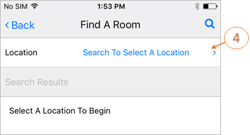

Assign or Remove Favorite Locations
Assigning favorite locations streamlines the booking process and filters your location search results.
To assign a location as a favorite:
- Tap the main menu icon in the upper left corner of the Home screen.

- Tap Favorite Locations.

- Click the + symbol to add Favorites.

- The Find a Location screen will appear. Search for rooms by Location.

- Choose a location from the Search Results list. When you search for locations during the booking process, those that are in your favorites list will be listed first.

To remove a favorite location:
When you no longer wish to see a location listed first in search results, you can remove it from your personalized list.
To remove a Favorite Location:
- Navigate to your Favorites list by clicking on the main menu in the upper left corner of {{product_mobile}} and selecting Favorite Locations.

- Click the Remove icon to remove a Favorite from your list.